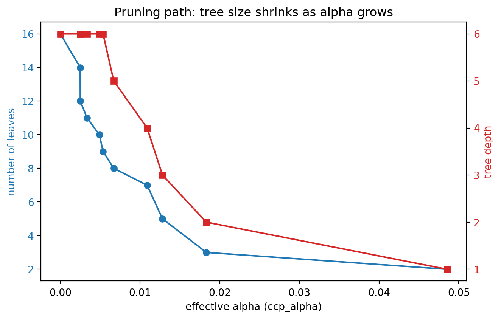
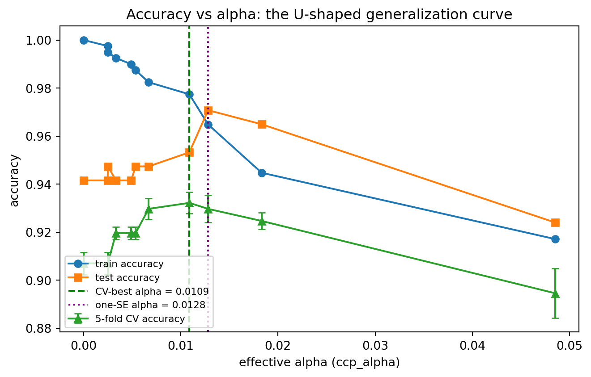

flowchart TD
A[Grow large tree T_max] --> B[Compute alpha_eff for every internal node]
B --> C{Find weakest link\nmin alpha_eff}
C --> D[Prune that branch to a leaf\nrecord breakpoint alpha_k]
D --> E{Only root left?}
E -- no --> B
E -- yes --> F[Nested sequence T_0 to T_m\nbreakpoints alpha_0 to alpha_m]
F --> G[k-fold cross-validate over alpha grid]
G --> H{Selection rule}
H -- min CV error --> I[alpha star]
H -- one standard error --> J[largest alpha within 1 SE]
I --> K[Refit pruned tree on full data]
J --> K
K --> L[Deploy single interpretable tree]
103 Decision Tree Pruning and Regularization
Decision trees are among the most interpretable and flexible models in machine learning, yet that flexibility is also their greatest liability. A tree that is allowed to grow without restraint will partition the feature space into ever finer regions until each region contains a single training example. Such a tree memorizes its training data perfectly and generalizes poorly. This chapter develops the theory and practice of controlling tree complexity. We treat overfitting as a bias variance phenomenon, introduce pre-pruning through structural constraints, and then derive cost-complexity pruning, the principled post-pruning method that underlies the CART algorithm and modern implementations such as scikit-learn.
103.1 1. Overfitting in Decision Trees
103.1.1 1.1 Why Trees Overfit
A decision tree is grown by recursively splitting nodes to reduce an impurity criterion. For classification the common choices are the Gini index and the entropy. For a node \(t\) with class proportions \(p(c \mid t)\), these are
\[ G(t) = \sum_{c} p(c \mid t)\,\bigl(1 - p(c \mid t)\bigr), \qquad H(t) = -\sum_{c} p(c \mid t)\,\log p(c \mid t). \]
For regression the splitting criterion is typically the mean squared error within a node,
\[ \mathrm{MSE}(t) = \frac{1}{N_t} \sum_{i \in t} \bigl(y_i - \bar{y}_t\bigr)^2, \]
where \(N_t\) is the number of samples reaching \(t\) and \(\bar{y}_t\) is their mean response. At each step the algorithm selects the split that maximizes the impurity decrease,
\[ \Delta i(s, t) = i(t) - \frac{N_{t_L}}{N_t}\,i(t_L) - \frac{N_{t_R}}{N_t}\,i(t_R), \]
for a candidate split \(s\) that sends samples to children \(t_L\) and \(t_R\).
The greedy nature of this procedure has an uncomfortable consequence. Because impurity is nonincreasing under any split, the algorithm can almost always find a split that lowers training error. Left unchecked it will continue until every leaf is pure. The resulting model has very low bias and very high variance. A small perturbation of the training set can change a split near the root and cascade into an entirely different tree. This sensitivity is the structural reason that single trees are weak learners that benefit so much from ensembling.
103.1.2 1.2 The Bias Variance Tradeoff for Tree Depth
Let \(f\) denote the unknown target function and \(\hat{f}_D\) the tree learned from a dataset \(D\). The expected squared error at a point \(x\) decomposes as
\[ \mathbb{E}_D\bigl[(y - \hat{f}_D(x))^2\bigr] = \sigma^2 + \mathrm{Bias}^2\bigl(\hat{f}_D(x)\bigr) + \mathrm{Var}\bigl(\hat{f}_D(x)\bigr). \]
Tree depth is the dominant knob governing the last two terms. Shallow trees impose a coarse, blocky approximation that cannot capture fine structure, so they carry high bias and low variance. Deep trees can fit arbitrarily intricate boundaries, driving bias toward zero while variance grows without bound. The generalization error, viewed as a function of depth, is U shaped. The job of regularization is to locate the bottom of that curve, where the marginal reduction in bias no longer compensates for the marginal increase in variance.
103.1.3 1.3 Diagnosing Overfitting
The clearest empirical signature of overfitting is a widening gap between training and validation performance as the tree grows. A fully grown tree often achieves zero training error while its validation error is far higher than that of a moderately sized tree. Plotting both curves against a complexity parameter, whether maximum depth or the cost-complexity penalty introduced in Section 3, makes the optimal operating point visible and is the single most useful diagnostic when tuning a tree.
103.2 2. Pre-Pruning by Structural Constraints
Pre-pruning, also called early stopping, halts tree growth before it perfectly fits the training data. It works by imposing constraints on the splitting process so that nodes which would produce small, unreliable, or marginal partitions are never created. Pre-pruning is computationally cheap because the rejected subtrees are never built in the first place.
103.2.1 2.1 Maximum Depth
The simplest constraint caps the depth of the tree. A tree of depth \(d\) can have at most \(2^d\) leaves and therefore partitions the feature space into at most \(2^d\) axis aligned regions. Limiting depth directly limits model capacity and is an effective coarse control on variance. Its weakness is that depth is a global budget applied uniformly. Some regions of the feature space may need many splits to be modeled well while others need few, and a single depth limit cannot accommodate that heterogeneity.
103.2.2 2.2 Minimum Samples Constraints
Two related constraints govern how many samples a node must contain. The first, often called min_samples_split, refuses to split any node holding fewer than a threshold number of samples. The second, min_samples_leaf, requires that every leaf retain at least a minimum number of samples, rejecting any candidate split that would create a child below that floor.
The statistical motivation is that impurity estimates and predicted values computed from a handful of samples are high variance. A leaf containing two examples provides essentially no reliable evidence about the conditional distribution of the target. Requiring a minimum leaf size enforces a degree of local averaging and smooths the predictions. The min_samples_leaf constraint is usually preferable to min_samples_split because it bounds the reliability of the leaves themselves rather than the nodes being considered for splitting.
103.2.3 2.3 Minimum Impurity Decrease
A further constraint refuses any split whose weighted impurity decrease falls below a threshold \(\epsilon\). Formally a split \(s\) at node \(t\) is permitted only if
\[ \frac{N_t}{N}\,\Delta i(s, t) \ge \epsilon, \]
where \(N\) is the total sample count and the factor \(N_t / N\) weights the gain by the fraction of data reaching the node. This rejects splits that carve off tiny, statistically insignificant improvements and is a natural complement to the sample count constraints.
# Pre-pruning via structural constraints (illustrative, not executable here)
clf = DecisionTreeClassifier(
max_depth=6,
min_samples_leaf=20,
min_samples_split=40,
min_impurity_decrease=1e-3,
)103.2.4 2.4 The Horizon Effect
Pre-pruning suffers from a well known shortcoming called the horizon effect. Because growth is stopped greedily, the algorithm may reject a split that yields little immediate gain even though it would enable a highly informative split one level deeper. The classic example is the exclusive or pattern, where neither feature alone reduces impurity but the two together separate the classes perfectly. A criterion that stops on the first weak split never discovers the strong interaction below it. This limitation motivates post-pruning, which sidesteps the problem by first growing a large tree and then removing branches that prove unhelpful in hindsight.
103.3 3. Cost-Complexity Pruning
Cost-complexity pruning, also known as weakest-link pruning, is the post-pruning method introduced by Breiman and colleagues in the CART framework. Rather than stopping early, it grows a large tree \(T_{\max}\) and then prunes it back by penalizing complexity, producing a nested sequence of subtrees from which the best is selected by validation.
103.3.1 3.1 The Cost-Complexity Criterion
Let \(T\) be a tree with set of leaves \(\tilde{T}\) and let \(|\tilde{T}|\) denote the number of leaves. Define the resubstitution error \(R(T)\) as the total error of \(T\) on the training data, for example the misclassification cost or the sum of squared residuals aggregated over leaves. The cost-complexity criterion adds a penalty proportional to the number of leaves,
\[ R_\alpha(T) = R(T) + \alpha\,\lvert \tilde{T} \rvert, \]
where \(\alpha \ge 0\) is the complexity parameter. The parameter \(\alpha\) sets the price of an additional leaf measured in units of training error. When \(\alpha = 0\) the unpenalized tree \(T_{\max}\) minimizes the criterion, since it has the lowest resubstitution error. As \(\alpha\) increases, larger trees are penalized more heavily and the minimizing subtree shrinks. For sufficiently large \(\alpha\) the optimal tree is the root alone.
103.3.2 3.2 The Weakest Link
The central object is the effective alpha of an internal node. For an internal node \(t\), let \(T_t\) be the branch rooted at \(t\), that is the subtree consisting of \(t\) and all its descendants. Compare two options. Keeping the branch contributes error \(R(T_t)\) with \(\lvert \tilde{T}_t \rvert\) leaves. Collapsing the branch into a single leaf at \(t\) contributes error \(R(t)\) with one leaf. The two are equally costly under the penalized criterion when
\[ R(t) + \alpha = R(T_t) + \alpha\,\lvert \tilde{T}_t \rvert, \]
which solving for \(\alpha\) gives the effective penalty
\[ \alpha_{\mathrm{eff}}(t) = \frac{R(t) - R(T_t)}{\lvert \tilde{T}_t \rvert - 1}. \]
The numerator is the increase in training error caused by collapsing the branch, and the denominator is the number of leaves removed. The node with the smallest \(\alpha_{\mathrm{eff}}\) is the weakest link, because it offers the least error increase per leaf saved. As \(\alpha\) rises from zero, this node is the first whose branch becomes worth collapsing.
103.3.3 3.3 The Pruning Sequence
The algorithm proceeds by repeatedly finding the weakest link and pruning it. Begin with \(T_{\max}\) and \(\alpha = 0\). At each step compute \(\alpha_{\mathrm{eff}}(t)\) for every internal node, identify the minimizing node, prune its branch to a leaf, and record the \(\alpha\) at which the prune occurred. Repeat on the smaller tree until only the root remains.
This produces a finite, strictly nested sequence of subtrees
\[ T_{\max} = T_0 \supset T_1 \supset T_2 \supset \cdots \supset T_m = \{\text{root}\}, \]
together with an increasing sequence of breakpoints
\[ 0 = \alpha_0 < \alpha_1 < \alpha_2 < \cdots < \alpha_m. \]
Breiman and colleagues proved two facts that make this construction powerful. First, for any value of \(\alpha\) there is a unique smallest subtree of \(T_{\max}\) that minimizes \(R_\alpha\), so the criterion has a well defined solution everywhere. Second, that minimizer is always one of the \(T_k\) in the sequence above. Each tree \(T_k\) is optimal for the entire interval \(\alpha \in [\alpha_k, \alpha_{k+1})\). The continuous one parameter family of optimization problems thus collapses to a small discrete set of candidate trees, which is what makes cost-complexity pruning tractable.
103.3.4 3.4 A Fully Worked Example
To see the weakest-link sequence emerge concretely, take a small tree \(T_{\max}\) grown on \(N = 200\) training points. We measure resubstitution error \(R\) as the misclassification count, so \(R(t)\) for an internal node is the number of points at \(t\) not belonging to the majority class there. Suppose the tree has three internal nodes whose branch statistics are as follows.
| Node | \(R(t)\) collapsed | \(R(T_t)\) kept | \(\lvert \tilde{T}_t \rvert\) | \(\alpha_{\mathrm{eff}}(t)\) |
|---|---|---|---|---|
| \(A\) (root) | \(40\) | \(8\) | \(6\) | \((40-8)/(6-1) = 6.4\) |
| \(B\) | \(14\) | \(6\) | \(3\) | \((14-6)/(3-1) = 4.0\) |
| \(C\) | \(9\) | \(6\) | \(2\) | \((9-6)/(2-1) = 3.0\) |
Each \(\alpha_{\mathrm{eff}}\) follows directly from
\[ \alpha_{\mathrm{eff}}(t) = \frac{R(t) - R(T_t)}{\lvert \tilde{T}_t \rvert - 1}. \]
The weakest link is the node with the smallest effective alpha, here node \(C\) at \(\alpha_{\mathrm{eff}} = 3.0\). As \(\alpha\) rises from zero, \(C\) is the first branch whose penalized cost of being kept exceeds its collapsed cost, so \(C\) is pruned at \(\alpha_1 = 3.0\). After collapsing \(C\) the error and leaf counts of any ancestor change, the effective alphas are recomputed, and the next weakest link is pruned. The breakpoints are nondecreasing, \(\alpha_1 \le \alpha_2 \le \cdots\), which is exactly the monotone sequence that indexes the nested subtrees.
To check the criterion explicitly at node \(C\), the kept branch costs \(R_\alpha(T_C) = 6 + 2\alpha\) and the collapsed leaf costs \(R_\alpha(C) = 9 + \alpha\). These are equal precisely when \(9 + \alpha = 6 + 2\alpha\), that is \(\alpha = 3\), confirming the formula. For \(\alpha < 3\) the branch is worth keeping; for \(\alpha > 3\) collapsing it lowers the penalized objective.
The contrast with naive pruning is instructive. Node \(B\) removes three leaves at a cost of eight errors, more total leaves removed than \(C\), yet its effective alpha \(4.0\) is larger, so it is pruned later. Weakest-link pruning rewards error efficiency per leaf rather than raw branch size, which is the precise sense in which it differs from simply deleting the largest branches. The runnable example in Section 6 reproduces this entire breakpoint sequence on a real dataset and plots the resulting tradeoff.
103.4 4. Minimal Cost-Complexity Tuning
Generating the pruning sequence is only half the task. We still must choose which \(\alpha\), and therefore which subtree, to deploy. This is a model selection problem and is solved by estimating generalization error for each candidate.
103.4.1 4.1 Selecting Alpha by Cross-Validation
The standard procedure is \(k\) fold cross-validation over the values of \(\alpha\). Because the relevant breakpoints differ from fold to fold, one typically defines a grid of \(\alpha\) values, often the breakpoints from a tree grown on the full data or a geometric mean of consecutive breakpoints. For each \(\alpha\) in the grid and each fold, a tree is grown on the training portion, pruned to the subtree optimal for that \(\alpha\), and evaluated on the held out portion. Averaging across folds yields a cross-validated error curve as a function of \(\alpha\).
# Obtain the pruning path, then cross-validate over alpha (illustrative)
path = DecisionTreeClassifier().cost_complexity_pruning_path(X_train, y_train)
alphas = path.ccp_alphas
scores = [cross_val_score(
DecisionTreeClassifier(ccp_alpha=a), X_train, y_train, cv=5
).mean()
for a in alphas]
best_alpha = alphas[int(np.argmax(scores))]103.4.2 4.2 The One Standard Error Rule
The minimum of the cross-validated error curve is itself an estimate and carries sampling noise, so picking the exact minimizer can select a tree that is slightly too large. Breiman and colleagues recommended the one standard error rule. Let \(\alpha^\star\) minimize the cross-validated error \(\mathrm{CV}(\alpha)\) with estimated standard error \(\mathrm{SE}(\alpha^\star)\). Choose instead the largest \(\alpha\), hence the smallest tree, whose error still satisfies
\[ \mathrm{CV}(\alpha) \le \mathrm{CV}(\alpha^\star) + \mathrm{SE}(\alpha^\star). \]
This deliberately favors simpler models that are statistically indistinguishable from the best, improving interpretability and robustness at a negligible cost in expected accuracy. It encodes a parsimony preference directly into the selection rule.
103.4.3 4.3 Relationship to Regularization
The cost-complexity criterion \(R_\alpha(T) = R(T) + \alpha \lvert \tilde{T} \rvert\) is a regularized objective of exactly the same form as ridge or lasso penalties, a loss term plus a complexity penalty scaled by a tuning parameter. Here the complexity measure is the leaf count, a discrete analog of the parameter norm used for linear models. Increasing \(\alpha\) shrinks the model class just as increasing the ridge penalty shrinks coefficients toward zero. Viewing pruning through this lens unifies it with the broader theory of regularization and explains why it controls variance so effectively.
103.4.4 4.4 Practical Guidance
Several practical points follow from the theory. First, post-pruning by cost-complexity generally outperforms pre-pruning on a single tree because it avoids the horizon effect, though it costs more to grow the full tree first. Second, pre-pruning and post-pruning are complementary rather than exclusive. Setting a modest min_samples_leaf before cost-complexity pruning bounds leaf variance and shrinks \(T_{\max}\), which speeds the whole pipeline without harming the final fit. Third, when a tree is one base learner inside a random forest or gradient boosting ensemble, the calculus changes. Ensembles average away the variance of individual trees, so individual trees are deliberately left deep, and regularization shifts to ensemble level controls such as the number of trees, the learning rate, and subsampling. Single tree pruning matters most precisely when interpretability of one tree is the goal.
103.5 5. The Pruning Pipeline at a Glance
The diagram below traces the full path from a fully grown tree to a deployed model, separating the offline pruning-sequence construction from the cross-validated selection of the operating point.
The loop on the left is purely combinatorial and runs once. The cross-validation on the right is the statistical step that turns the discrete family of candidate trees into a single defensible choice.
103.6 6. Implementation and Verification
The following cell is fully executable. It grows an unrestricted tree on a real classification dataset, extracts the cost-complexity pruning path, and plots two diagnostic figures: the number of leaves and effective alpha against the breakpoints, and the train versus test accuracy against the breakpoints. It prints a results table of the pruning sequence, selects \(\alpha\) by cross-validation, and uses SymPy to verify the weakest-link indifference equation symbolically. A fixed seed makes every number reproducible.
Code
import numpy as np
import pandas as pd
import matplotlib.pyplot as plt
import sympy as sp
from sklearn.datasets import load_breast_cancer
from sklearn.model_selection import train_test_split, cross_val_score
from sklearn.tree import DecisionTreeClassifier
RNG = 20260620
np.random.seed(RNG)
# Load a real binary classification dataset (open data shipped with scikit-learn)
data = load_breast_cancer()
X, y = data.data, data.target
X_train, X_test, y_train, y_test = train_test_split(
X, y, test_size=0.30, random_state=RNG, stratify=y
)
# Grow an unrestricted tree, then extract the cost-complexity pruning path
base = DecisionTreeClassifier(random_state=RNG)
path = base.cost_complexity_pruning_path(X_train, y_train)
ccp_alphas, impurities = path.ccp_alphas, path.impurities
# Fit one pruned tree per breakpoint alpha (drop the trivial root-only last point)
ccp_alphas = ccp_alphas[:-1]
trees = []
for a in ccp_alphas:
t = DecisionTreeClassifier(random_state=RNG, ccp_alpha=a)
t.fit(X_train, y_train)
trees.append(t)
n_leaves = [t.get_n_leaves() for t in trees]
depths = [t.get_depth() for t in trees]
train_acc = [t.score(X_train, y_train) for t in trees]
test_acc = [t.score(X_test, y_test) for t in trees]
# Cross-validate accuracy over the alpha grid to choose an operating point
cv_means, cv_ses = [], []
for a in ccp_alphas:
scores = cross_val_score(
DecisionTreeClassifier(random_state=RNG, ccp_alpha=a),
X_train, y_train, cv=5
)
cv_means.append(scores.mean())
cv_ses.append(scores.std() / np.sqrt(len(scores)))
cv_means = np.array(cv_means)
cv_ses = np.array(cv_ses)
best_idx = int(np.argmax(cv_means))
best_alpha = ccp_alphas[best_idx]
# One standard error rule: largest alpha (smallest tree) within 1 SE of the best
threshold = cv_means[best_idx] - cv_ses[best_idx]
ose_candidates = np.where(cv_means >= threshold)[0]
ose_idx = int(ose_candidates.max())
ose_alpha = ccp_alphas[ose_idx]
# Results table for the pruning sequence
table = pd.DataFrame({
"ccp_alpha": np.round(ccp_alphas, 6),
"n_leaves": n_leaves,
"depth": depths,
"train_acc": np.round(train_acc, 4),
"test_acc": np.round(test_acc, 4),
"cv_mean": np.round(cv_means, 4),
"cv_se": np.round(cv_ses, 4),
})
pd.set_option("display.width", 120)
print("Cost-complexity pruning sequence")
print(table.to_string(index=False))
print()
print(f"Unpruned tree: {n_leaves[0]} leaves, depth {depths[0]}, "
f"test accuracy {test_acc[0]:.4f}")
print(f"CV-best alpha = {best_alpha:.6f} -> {n_leaves[best_idx]} leaves, "
f"test accuracy {test_acc[best_idx]:.4f}")
print(f"One-SE alpha = {ose_alpha:.6f} -> {n_leaves[ose_idx]} leaves, "
f"test accuracy {test_acc[ose_idx]:.4f}")
# SymPy check of the weakest-link indifference equation from Section 3.4:
# R(t) + alpha = R(T_t) + alpha * |leaves|, solved for alpha.
alpha, Rt, RTt, m = sp.symbols("alpha R_t R_Tt m", positive=True)
indifference = sp.Eq(Rt + alpha, RTt + alpha * m)
alpha_eff = sp.solve(indifference, alpha)[0]
print()
print("SymPy weakest-link solution: alpha_eff =", alpha_eff)
# Verify against the node C numbers from the worked example (R_t=9, R_Tt=6, m=2)
alpha_eff_C = alpha_eff.subs({Rt: 9, RTt: 6, m: 2})
print("Worked-example node C alpha_eff =", alpha_eff_C)
assert alpha_eff_C == 3, "SymPy check failed for worked example"
print("SymPy check passed: closed form matches alpha_eff(C) = 3")
# Figure 1: number of leaves and effective alpha against breakpoints
fig1, ax1 = plt.subplots(figsize=(7, 4.5))
ax1.plot(ccp_alphas, n_leaves, marker="o", color="tab:blue",
label="number of leaves")
ax1.set_xlabel("effective alpha (ccp_alpha)")
ax1.set_ylabel("number of leaves", color="tab:blue")
ax1.tick_params(axis="y", labelcolor="tab:blue")
ax2 = ax1.twinx()
ax2.plot(ccp_alphas, depths, marker="s", color="tab:red",
label="tree depth")
ax2.set_ylabel("tree depth", color="tab:red")
ax2.tick_params(axis="y", labelcolor="tab:red")
ax1.set_title("Pruning path: tree size shrinks as alpha grows")
fig1.tight_layout()
# Figure 2: train vs test vs CV accuracy against breakpoints
fig2, ax = plt.subplots(figsize=(7, 4.5))
ax.plot(ccp_alphas, train_acc, marker="o", label="train accuracy")
ax.plot(ccp_alphas, test_acc, marker="s", label="test accuracy")
ax.errorbar(ccp_alphas, cv_means, yerr=cv_ses, marker="^",
capsize=3, label="5-fold CV accuracy")
ax.axvline(best_alpha, color="green", linestyle="--",
label=f"CV-best alpha = {best_alpha:.4f}")
ax.axvline(ose_alpha, color="purple", linestyle=":",
label=f"one-SE alpha = {ose_alpha:.4f}")
ax.set_xlabel("effective alpha (ccp_alpha)")
ax.set_ylabel("accuracy")
ax.set_title("Accuracy vs alpha: the U-shaped generalization curve")
ax.legend(loc="lower left", fontsize=8)
fig2.tight_layout()
plt.show()Cost-complexity pruning sequence
ccp_alpha n_leaves depth train_acc test_acc cv_mean cv_se
0.000000 16 6 1.0000 0.9415 0.9070 0.0046
0.002491 14 6 0.9975 0.9415 0.9070 0.0046
0.002501 12 6 0.9950 0.9474 0.9070 0.0046
0.003350 11 6 0.9925 0.9415 0.9196 0.0026
0.004900 10 6 0.9899 0.9415 0.9196 0.0026
0.005360 9 6 0.9874 0.9474 0.9196 0.0026
0.006700 8 5 0.9824 0.9474 0.9297 0.0044
0.010888 7 4 0.9774 0.9532 0.9322 0.0044
0.012818 5 3 0.9648 0.9708 0.9297 0.0056
0.018323 3 2 0.9447 0.9649 0.9247 0.0034
0.048535 2 1 0.9171 0.9240 0.8945 0.0104
Unpruned tree: 16 leaves, depth 6, test accuracy 0.9415
CV-best alpha = 0.010888 -> 7 leaves, test accuracy 0.9532
One-SE alpha = 0.012818 -> 5 leaves, test accuracy 0.9708
SymPy weakest-link solution: alpha_eff = (-R_Tt + R_t)/(m - 1)
Worked-example node C alpha_eff = 3
SymPy check passed: closed form matches alpha_eff(C) = 3

The two figures jointly visualize the regularization story of this chapter. The first shows that increasing \(\alpha\) monotonically collapses the tree from many leaves toward the root. The second shows the consequence for generalization: training accuracy is highest for the unpruned tree, but test and cross-validated accuracy peak at an intermediate \(\alpha\) and then fall as pruning becomes too aggressive, tracing the U-shaped curve from Section 1.2. The CV-best and one-standard-error selections mark two principled operating points on that curve.
103.6.1 6.1 The Same Path in Other Languages
The cost-complexity idea is not specific to scikit-learn. The tabset below shows the core path-extraction and pruning step in three ecosystems. The Python tab is the executable reference above in miniature; the Julia and Rust tabs are idiomatic equivalents.
Code
from sklearn.tree import DecisionTreeClassifier
# Extract breakpoints, then fit one pruned tree at a chosen alpha
clf = DecisionTreeClassifier(random_state=20260620)
breakpoints = clf.cost_complexity_pruning_path(X_train, y_train).ccp_alphas
chosen = float(breakpoints[len(breakpoints) // 2])
pruned = DecisionTreeClassifier(random_state=20260620, ccp_alpha=chosen)
pruned.fit(X_train, y_train)
print(f"chosen alpha = {chosen:.6f}, leaves = {pruned.get_n_leaves()}, "
f"test acc = {pruned.score(X_test, y_test):.4f}")chosen alpha = 0.006700, leaves = 8, test acc = 0.9474# DecisionTree.jl exposes post-pruning via merge_leaves / prune_tree.
using DecisionTree
model = DecisionTreeClassifier() # unrestricted growth
fit!(model, X_train, y_train)
# Prune leaves whose combined purity exceeds a threshold (analogous knob to alpha).
# Larger threshold collapses more branches, shrinking the tree.
pruned = prune_tree(model.root.node, 0.9)
acc = sum(apply_tree(pruned, x) == y for (x, y) in zip(eachrow(X_test), y_test)) /
length(y_test)
println("pruned test accuracy = ", round(acc, digits = 4))// linfa-trees grows CART-style trees; complexity is controlled at fit time
// via min_weight_split / min_weight_leaf / max_depth (pre-pruning analogs).
use linfa::prelude::*;
use linfa_trees::DecisionTree;
fn main() {
let (train, test) = linfa_datasets::iris().split_with_ratio(0.7);
// Tighter constraints play the role of a larger alpha: a smaller tree.
let model = DecisionTree::params()
.min_weight_leaf(5.0)
.max_depth(Some(4))
.fit(&train)
.expect("tree fits");
let pred = model.predict(&test);
let acc = pred.confusion_matrix(&test).unwrap().accuracy();
println!("constrained test accuracy = {acc:.4}");
}103.7 7. Summary
Decision trees overfit because greedy impurity reduction will partition the data until leaves are pure, yielding low bias and high variance. Pre-pruning combats this by constraining growth through maximum depth, minimum sample counts, and minimum impurity decrease, at the cost of susceptibility to the horizon effect. Cost-complexity pruning grows a full tree and prunes it back by minimizing \(R(T) + \alpha \lvert \tilde{T} \rvert\), producing a nested sequence of subtrees indexed by the weakest-link breakpoints. The complexity parameter \(\alpha\) is then chosen by cross-validation, often with the one standard error rule, selecting the simplest tree that generalizes well. Understood as a regularized objective, pruning takes its place alongside ridge and lasso as a principled control on the bias variance tradeoff.
103.8 References
- Breiman, L., Friedman, J., Olshen, R., and Stone, C. Classification and Regression Trees. Wadsworth, 1984. https://doi.org/10.1201/9781315139470
- Hastie, T., Tibshirani, R., and Friedman, J. The Elements of Statistical Learning, 2nd edition. Springer, 2009. https://hastie.su.domains/ElemStatLearn/
- scikit-learn developers. Minimal Cost-Complexity Pruning. https://scikit-learn.org/stable/modules/tree.html#minimal-cost-complexity-pruning
- scikit-learn developers. Post Pruning Decision Trees with Cost Complexity Pruning. https://scikit-learn.org/stable/auto_examples/tree/plot_cost_complexity_pruning.html
- James, G., Witten, D., Hastie, T., and Tibshirani, R. An Introduction to Statistical Learning. Springer, 2021. https://www.statlearning.com/
- Quinlan, J. R. C4.5: Programs for Machine Learning. Morgan Kaufmann, 1993. https://dl.acm.org/doi/book/10.5555/152181